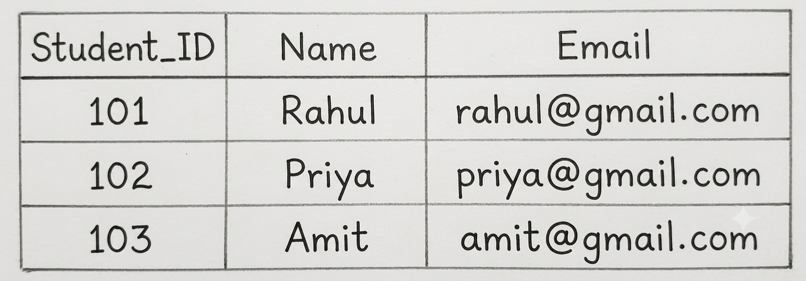

Q10. Explain the Logical View of Data and the Concept of Keys in a Relational Database with Examples.
1. Logical View of Data
The Logical View of Data describes how data is organized into tables in a relational database without showing how it is physically stored on disk.
Example: STUDENT Table

2. Main Components of the Logical View
- Relation: A table containing rows and columns. Example: STUDENT.
- Tuple: A single row in a table. Example: (101, Rahul, rahul@gmail.com).
- Attribute: A column in a table. Example: Student_ID, Name.
- Domain: The set of allowed values for an attribute. Example: Marks can be between 0 and 100.
- Degree: The number of columns in a table. Example: STUDENT has degree 3.
- Cardinality: The number of rows in a table. Example: STUDENT has cardinality 3.
3. Concept of Keys
A Key is an attribute or a combination of attributes used to uniquely identify records in a relational table.
Keys also help prevent duplicate records and establish relationships between different tables.
4. Types of Keys
1. Super Key
A Super Key is an attribute or combination of attributes that uniquely identifies a record in a table.
Example: Student_ID and (Student_ID, Name) are Super Keys.
2. Candidate Key
A Candidate Key is a minimal Super Key that uniquely identifies a record without any unnecessary attribute.
Example: Student_ID and Email can be Candidate Keys if both are unique.
3. Primary Key
A Primary Key is the Candidate Key selected as the main identifier of records in a table. It cannot contain NULL values.
Example: Student_ID is the Primary Key of the STUDENT table.
4. Alternate Key
An Alternate Key is a Candidate Key that is not selected as the Primary Key.
Example: If Student_ID is the Primary Key, Email can be an Alternate Key.
5. Foreign Key
A Foreign Key is an attribute in one table that refers to the Primary Key of another table. It connects related tables.
Example: Student_ID in the ENROLLMENT table refers to Student_ID in the STUDENT table.
Diagram: Primary Key and Foreign Key

6. Composite Key
A Composite Key consists of two or more attributes that together uniquely identify a record.
Example: (Student_ID, Course_ID) together form a Composite Key in the ENROLLMENT table.